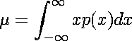
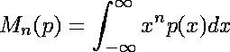
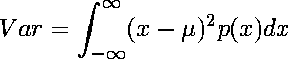

| For a distribution taking on values x1, ..., xN, xi occurring with probability pi, we know the expected value, or average, is |
| x1p1 + x2p2 + ... + xNpN |
| Then for a continuous distribution p(x) the expected value, or mean, mu is |
|  |
| In general, the nth moment of p(x) is |
|  |
| So mu = M1(p). |
| The variance is the average value of
|
|  |
| Expanding (x - mu)2 and distributing the integrals, we see |
Return to the standard deviation.